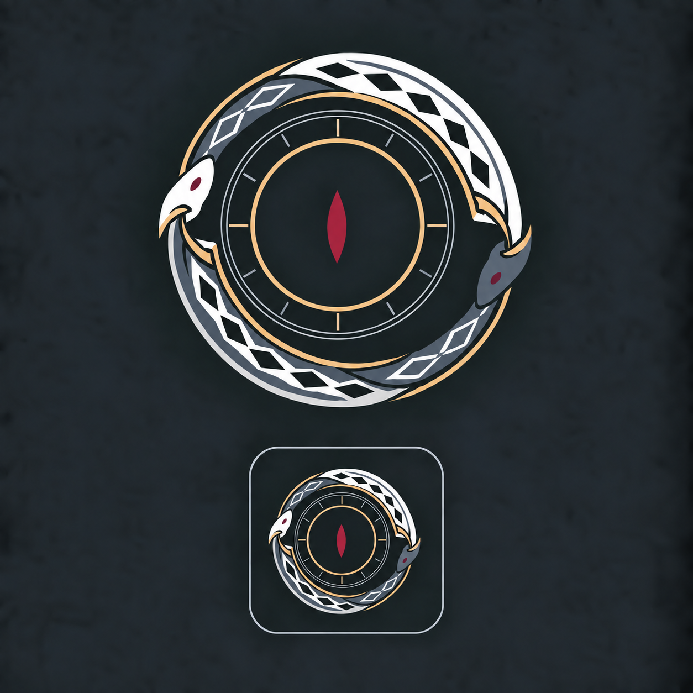

携帯端末 / 謎のアプリ
ウロボロスの円環
原作者が修正したPNGを採用。絵には追加加工せず、そのまま表示しています。以前のPNG・見本・SVG試作は保存済み。本編・メニューへの差し替えはまだ行っていません。


小さくしたときの見え方
背景とサイズを切り替えて、赤い目・瞳孔・鱗の残り方を確認できます。
素材を読み込めませんでした。このHTMLと同じフォルダにSVG・PNG・見本画像があるか確認してください。
携帯端末 / 謎のアプリ
原作者が修正したPNGを採用。絵には追加加工せず、そのまま表示しています。以前のPNG・見本・SVG試作は保存済み。本編・メニューへの差し替えはまだ行っていません。

背景とサイズを切り替えて、赤い目・瞳孔・鱗の残り方を確認できます。
素材を読み込めませんでした。このHTMLと同じフォルダにSVG・PNG・見本画像があるか確認してください。